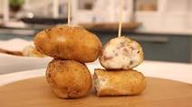

Croquetas de jamón
Receta de Croquetas de jamón, un plato típico que se presenta como entrante o aperitivo y elaborado por el cocinero Karlos Arguiñano ¡todo un clásico!
Receta de Croquetas de jamón, un plato típico que se presenta como entrante o aperitivo y elaborado por el cocinero Karlos Arguiñano ¡todo un clásico!
Si eres un amante de ellas croquetas esta receta te encantará. Hoy traemos receta de croquetas de espinacas, genial para introducir verduras en la dieta de los más pequeños y mayores.